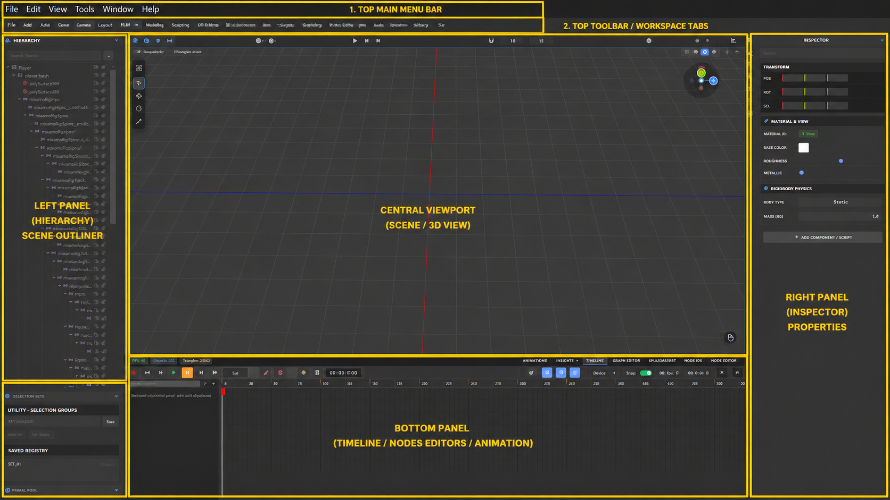
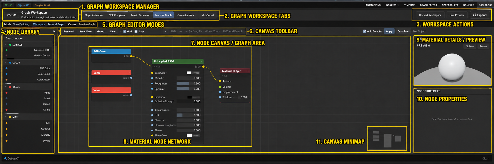
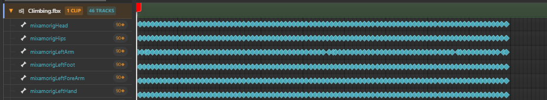

Viewport / context01 / Focus
One mental model
Shared scene, tools and shortcuts reduce context switching, so the user keeps a stable sense of place.
Less cognitive loadA desktop space for turning a rough idea into a finished frame—without losing the scene, the decision or the thread between them.
The visual system uses clarity, immediate feedback and meaningful motion to help users know where they are, what changed and what to do next.

Viewport / contextShared scene, tools and shortcuts reduce context switching, so the user keeps a stable sense of place.
Less cognitive load
Nodes / feedbackDirect manipulation and live visual feedback make the interface feel responsive, predictable and trustworthy.
Stronger confidence
Timeline / flowConsistent hierarchy and purposeful transitions show continuity instead of making each tool feel like a new app.
Sustained momentumPick the view that matches the decision in front of you. The scene stays put while the controls change around it.
Keep the object in view while you move from a rough silhouette to a form you can actually judge.
Open with the object in view and make the first visible change.
↗ 02Turn a value, connection or rule into something you can inspect.
↗ 03Set a beat, move the camera and see the difference immediately.
↗ 04
04
Use light, water and space to make the frame feel like somewhere.
↗ 05
05
Review picture, sound and timing before the work leaves the editor.
↗SM Engine is free, open source and ready for Windows.